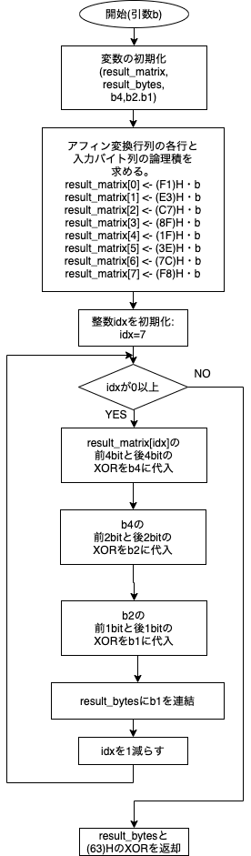

Dockerを用いて実験の環境を構築した。比較のためにネイティブで動作するUbuntuでも動作の確認をした。
OS: macOS 12.0.1 21A558 arm64
OS: Ubuntu 20.04.2 LTS x86_6
コンテナは次のファイルを用い、フラグとして--platform='linux/amd64'を指定しビルドした。
FROM ubuntu:latest
WORKDIR /home
RUN apt update && \
apt upgrade -y && \
apt install gcc make -y
CMD ["/usr/bin/bash","-l"]
以下に示すのはMultiply関数、Inverse関数、Affine関数を含むaes.cのプログラム全体である。
#include "aes128.h"
unsigned char Multiply(unsigned char x, unsigned char y) {
unsigned char z = 0;
while (y != 0) {
if (y % 2 == 1) {
z ^= x;
}
y = y >> 1;
if (x >= 0x80) {
x <<= 1;
x ^= 0x1B;
} else {
x <<= 1;
}
}
return z;
}
unsigned char Inverse(unsigned char b) {
double b2, b4, b8, b16, b32, b64, b128, b254;
b2 = Multiply(b, b);
b4 = Multiply(b2, b2);
b8 = Multiply(b4, b4);
b16 = Multiply(b8, b8);
b32 = Multiply(b16, b16);
b64 = Multiply(b32, b32);
b128 = Multiply(b64, b64);
b254 = Multiply(
Multiply(Multiply(Multiply(Multiply(Multiply(b2, b4), b8), b16), b32),
b64),
b128);
return b254;
}
unsigned char Affine(unsigned char b) {
unsigned char result_matrix[8];
unsigned char result_bytes = 0, b4, b2, b1;
result_matrix[0] = 0xF1 & b;
result_matrix[1] = 0xE3 & b;
result_matrix[2] = 0xC7 & b;
result_matrix[3] = 0x8F & b;
result_matrix[4] = 0x1F & b;
result_matrix[5] = 0x3E & b;
result_matrix[6] = 0x7C & b;
result_matrix[7] = 0xF8 & b;
for (int idx = 7; idx >= 0; idx--) {
b4 = (result_matrix[idx] >> 4) ^ result_matrix[idx];
b2 = (b4 >> 2) ^ b4;
b1 = (b2 >> 1 ^ b2) & 0x01;
result_bytes = b1 ^ (result_bytes << 1);
}
return result_bytes ^ 0x63;
}
Inverseのアルゴリズム上記のaes.cに示した通り、Inverse関数のアルゴリズムとして、資料に示されてる「計算方法2」を使用した。
Affine関数のフローチャート
Multiplyアルゴリズムの正当性unionによる実現keyexpand.cでは、4バイトデータと1ワードデータの相互変換をaes128.hで定義されるkey_t型のunion(共用体)変数を用いて行っている。
C言語においてunionとは、同じメモリ領域を複数の型の変数が共有する共用体のデータ構造である。
key_t型ではunsigned long int型のword(32ビット)とunsigned char[4]型のbyte(8ビット*4)が同じメモリ領域を共有している。
unionの初期化は先頭のメンバ変数の型で行われるため、key_t型の場合、メモリ上に32ビットの連続した領域が確保される。
例えば0x12345678というデータでkey_t型の変数xを初期化すると、x.wordでワードデータとして、
x.byte[1]で2バイト目のデータ(0x34)を得ることができる。
ルックアップテーブルsbox.c,mbox02.c,mbox03.cを生成するプログラムとして、
gen_sbox.c,gen_mbox02.c,gen_mbox03.cを作成した。
以下が作成したプログラムの内容である。
gen_sbox.c#include "aes128.h"
#include <stdio.h>
int main(void) {
printf("unsigned char sbox[256] = {");
for (int b = 0; b <= 254; b++) {
printf("0x%02X, ", Affine(Inverse(b)));
}
printf("0x%02X };\n", Affine(Inverse(255)));
return 0;
}
gen_mbox02.c#include "aes128.h"
#include <stdio.h>
int main(void) {
printf("unsigned char mbox02[256] = {");
for (unsigned char b = 0; b <= 254; b++) {
printf("0x%02X, ", Multiply(b, 0x02));
}
printf("0x%02X };\n", Multiply(255, 0x02));
return 0;
}
gen_mbox03.c#include "aes128.h"
#include <stdio.h>
int main(void) {
printf("unsigned char mbox03[256] = {");
for (unsigned char b = 0; b <= 254; b++) {
printf("0x%02X, ", Multiply(b, 0x03));
}
printf("0x%02X };\n", Multiply(255, 0x03));
return 0;
}
以上のプログラムを次に抜粋して示すMakefileでコンパイルしルックアップテーブルを生成した。
SHELL = /bin/bash
CC = /bin/cc
BIN = ./bin
# 実験2: 配列コード生成
gen_boxes: gen_sbox gen_mbox02 gen_mbox03
@$(BIN)/gen_sbox > sbox.c
@$(BIN)/gen_mbox02 > mbox02.c
@$(BIN)/gen_mbox03 > mbox03.c
@$(CC) -c sbox.c
@$(CC) -c mbox02.c
@$(CC) -c mbox03.c
gen_sbox: gen_sbox.o aes.o
$(CC) -o $(BIN)/gen_sbox \
gen_sbox.o aes.o
gen_mbox02: gen_mbox02.o aes.o
$(CC) -o $(BIN)/gen_mbox02 \
gen_mbox02.o aes.o
gen_mbox03: gen_mbox03.o aes.o
$(CC) -o $(BIN)/gen_mbox03 \
gen_mbox03.o aes.o
以上のプログラムをそれぞれコンパイルし実行ファイル
SubBytes関数,MixColumns関数上記に示したルックアップテーブルを用い、高速化を図った
SubBytes関数とMixColumns関数をそれぞれ
subbytes_lut.c,mixcolumns_lut.cに作成した。
sboxの値：mbox02,mbox03の値：